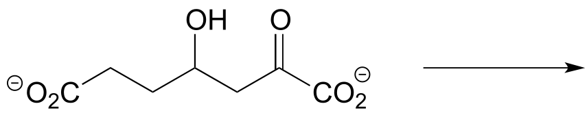
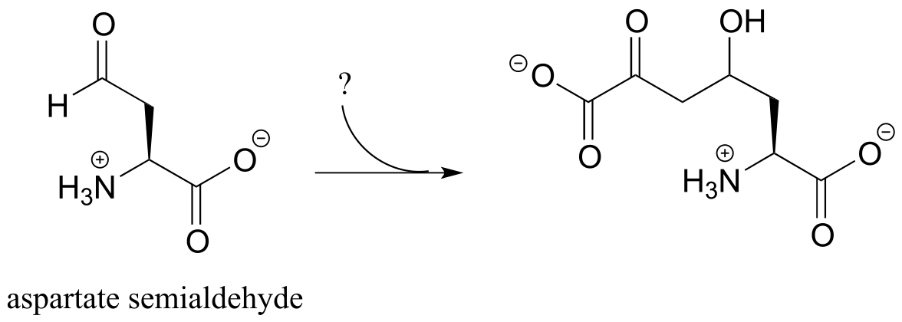
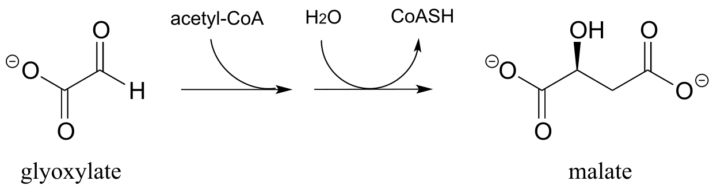
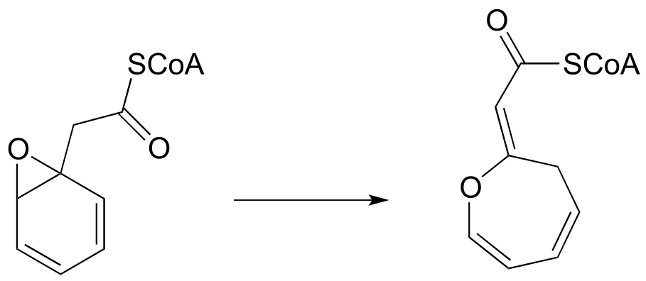
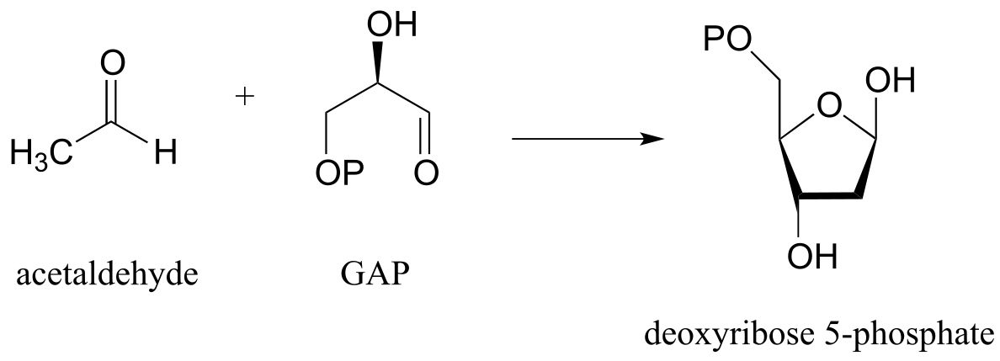

12: Reactions at the ⍺-carbon, part I
Contents
12: Reactions at the ⍺-carbon, part I#

photo credit: Alan Couch (https://www.flickr.com/photos/couchy/)
Introduction#
There are lots of things that can kill you in northern Australia. On land, there is the death adder, the tiger snake and the redback spider; in the water, you’d be well advised to give wide berth to the salt water crocodile, the stonefish, the great white shark, and of course, the duck-billed platypus.
The duck-billed platypus?
Consider this: in 1991, a man fishing a river in northern Queensland, Australia happened across a platypus sitting on a log. Thinking it was injured, he picked it up. For his trouble, he spent the next six days in a nearby hospital, suffering from two puncture wounds in his right hand that resulted in “immediate, sustained, and devastating” pain, against which the usual analgesic drugs were almost completely useless. His hand “remained painful, swollen and with little movement for three weeks. Significant functional impairment … persisted for three months”.
***
Meanwhile, on the other side of the planet, deep in the rain forests that straddle the border between eastern Peru and Brazil, a young man of the Matses tribe prepares himself to receive the ‘hunting magic’. He holds the end of a short wooden stick in a fire for a few minutes, then removes it and presses the red-hot end into the skin of his chest, holding it there for long enough for the skin to be burned. Then he scrapes the burned skin away, and rubs into the wound a paste made from saliva mixed with secretions taken from the skin of a giant leaf frog.
An American journalist named Peter Gorman, who reports having had the frog-skin paste administered in the same manner during a visit to a Matses village, describes what happens next:
Instantly my body began to heat up. In seconds I was burning from the inside … I began to sweat. My blood began to race. My heart pounded. I became acutely aware of every vein and artery in my body and could feel them opening to allow for the fantastic pulse of my blood. My stomach cramped and I vomited violently. I lost control of my bodily functions… (and) fell to the ground. Then, unexpectedly, I found myself growling and moving about on all fours. I felt as though animals were passing through me, trying to express themselves through my body.
After the immediate violent effects pass, the Matses hunter is carried by his friends to a hammock to recover. After sleeping for a day, he awakens to find himself with what his people call the ‘hunting magic’: a state of heightened awareness, possessed of tremendous energy and an abnormally keen sense of vision, hearing and smell. In the words of Mr. Gorman, “everything about me felt larger than life, and my body felt immensely strong… [I was] beginning to feel quite godlike”.
***
There is a connection between the killer platypus in Australia and the ‘hunting magic’ in the Amazon, and it has to do with the structure and reactivity of what organic chemists refer to as the α-carbon: the carbon atom positioned adjacent to a carbonyl or imine group in an organic molecule:

fig 1a
It is this chemistry that we are going to be studying for the next two chapters. But first, let’s go back to that river in northern Australia and the fisherman who apparently didn’t pay enough attention in his high school wildlife biology class.
The platypus, along with a few species of shrews and moles, is an example of a very rare phenomenon in nature: a venomous mammal. The male platypus possesses a pair of sharp spurs on each of his hind legs near the ankle. These spurs are hollow, and connected by a duct to a venom-producing gland in the thigh. The consensus among scientists who study the platypus is that males use their venomous barbs mainly when fighting each other over territory during mating season. Because healthy animals are often found with multiple scars from spur wounds, a platypus who gets spurred during a fight with a rival will not always die, but the experience is unpleasant enough that he will start looking for real estate a healthy distance down the river.
It is not easy to milk the venom from an angry, thrashing platypus, but there are scientists out there who have done it. It turns out that, like snake and spider venom, the venom from a platypus spur consists of a mixture of neuroactive peptides (peptides are very short proteins - less than 50 amino acids long). Recently, a team of biochemists from the Universities of Sydney, Queensland, and Adelaide reported that they were able to isolate from platypus venom two forms of a 39-amino acid peptide. Further analysis using NMR and mass spectrometry revealed that the two forms of the peptide differed in structure only at a single amino acid: the leucine at the #2 position. In one form, the leucine had the L configuration (or S if using the R/S system), just like the amino acids in virtually all other peptides and proteins found in nature. In the other form, this leucine had the unusual D, or R configuration.

fig 1a
Peptides or proteins incorporating D-amino acids are not unheard of in nature, but this was the first time that one had been found in a mammal. Interestingly, the venom from certain marine cone snails and spiders - and, yes, the skin of the giant leaf frog in the Amazon rain forest - also contain neuroactive peptides with D-amino acids.
What is the advantage - to a platypus, cone snail, spider, or frog - of making a venomous peptide with D stereochemistry on one or more of its amino acids? It all has to do with generating diversity of shape and function. These are neuroactive peptides: each one interacts in a very specific way with a specific neural protein, thus exerting a specific neurological effect on the person or animal exposed to the venom. The different spatial arrangement of atoms about the α-carbon of D- and L-amino acids will cause a peptide with a D-leucine at position #2, for example, to fold into a different shape than its counterpart with an L-leucine at the same position. Thus, the two peptides may bind differently to one or more proteins in the nervous system, and ultimately may exert different neurological effects - such as intense pain in the case of playpus venom, or the ‘hunting magic’ effect in the case of the peptide from frog skin. The ability to incorporate D-amino acids greatly expands the potential structural and functional diversity of these short peptides.
The two stereoisomeric platypus venom peptides are encoded by the same gene. The peptides are initially synthesized using all L-amino acids, and then the leucine at position #2 undergoes a ‘post-translational modification’: in other words, a specific enzyme binds the all-L peptide after it has been synthesized on the ribosome and changes the leucine residue to the D configuration.
It is this reaction - a stereoisomerization reaction that takes place at the α-carbon of an amino acid - that brings us to the central topic of this chapter and the next: chemistry at the α-carbon. The key concept to recall from what we have learned about acidity and basicity in organic chemistry, and to keep in mind throughout this discussion, is that α-protons (in other words, protons on α-carbons) are weakly acidic. Loss of an α-proton forms an enolate - a species in which a negative formal charge is delocalized between a carbon and an oxygen. The ‘enolate’ term will be very important in the next two chapters, because most of the reactions we see will go through an enolate intermediate.

fig 1d
In this chapter, we will first see several examples of isomerization reactions, in which an enzyme acts at the α-carbon of a substrate to catalyze the interconversion of two constitutional isomers or stereoisomers. Then, we will be introduced to a reaction type known as the ‘aldol addition’ and its reverse counterpart, the ‘retro-aldol’ cleavage reaction. Up to now, we have seen plenty of reactions where bonds were formed and broken between carbon and oxygen, nitrogen, or sulfur. Here, for the first time, we will see how enzymes can catalyze the formation or cleavage - again, at the α position - of carbon-carbon bonds: in other words, we will learn how an α-carbon can be either a nucleophile or a leaving group in an enzymatic reaction. This has clear importance for an understanding of metabolism in living things: the molecules of life, after all, are built upon a framework of carbon-carbon bonds, and metabolism is the process by which living cells build up and break down complex biomolecules.
It all starts with the α-carbon - and as both the Australian fisherman and the Amazonian hunter could attest, what happens at the α-carbon can have some rather dramatic consequences.
12.1: Review of acidity at the α-carbon#
Let’s review what we learned in section 7.6A about the acidity of a proton on an α-carbon and the structure of the relevant conjugate base, the enolate ion. Remember that this acidity can be explained by the fact that the negative charge on the enolate conjugate base is delocalized by resonance to both the α-carbon and the carbonyl oxygen.

fig 1b
The α-carbon on the enolate is sp2-hybridized with trigonal planar geometry, as are the carbonyl carbon and oxygen atoms (now would be a good time to go back to sections 2.1C, 2.2B, and 2.3B to review, if necessary, the geometry of π-bonding in conjugated systems). The pKa of a typical α-proton in aqueous solution is approximately 18-20: acidic, but only weakly so. Recall from section 7.8, however, that the effective pKa of a functional group on an enzyme-bound molecule can be altered dramatically by the ‘microenvironment’ of the active site. In order to lower the pKa of an α−proton, an enzyme catalyzing a reaction that begins with an α-proton abstraction step must further stabilize the negative charge that develops on the oxygen atom of the (enolate) conjugate base. Different enzymes have evolved different strategies for accomplishing this task: in some cases, a metal cation (often Zn+2) is bound in the active site to provide a stabilizing ion-ion interaction. In other cases, stabilization is provided by a proton-donating group positioned near the oxygen. As a third possibility, the active site architecture sometimes provides one or more stabilizing hydrogen bond donor groups.

fig 1e
In most of the mechanism illustrations in this chapter where an enolate intermediate is depicted, stabilizing metal ions or hydrogen bond interactions will not be explicitly drawn, for the sake of clarity. However, whenever you see an enolate intermediate in an enzyme-catalyzed reaction, you should remember that there are stabilizing interactions in play inside the active site.
12.2: Isomerization at the α-carbon#
Enolate ions, as well as enols and and enamines (section 7.6) are the key reactive intermediates in many biochemical isomerization reactions. Isomerizations can involve either the interconversion of constitutional isomers, in which bond connectivity is altered, or of stereoisomers, where the stereochemical configuration is changed. Enzymes that interconvert constitutional isomers are usually called isomerases, while those that interconvert the configuration of a chiral carbon are usually referred to as racemases or epimerases.
12.2A: Carbonyl isomerization#
One very important family of isomerase enzymes catalyzes the shifting of a carbonyl group in sugar molecules, often converting between a ketose and an aldose (recall that the terms ketose and aldolse refer to sugar molecules containing ketone and aldehyde groups, respectively).
Carbonyl isomerization:

Mechanism:

fig 8
The ketose species is first converted to its enol tautomer in step 1 (actually, this particular intermediate is known as an ‘ene-diol*’* rather than an enol, because there are hydroxyl groups on both sides of the carbon-carbon double bond). Step 2 leads to the aldose, and is simply another tautomerization step. However, because there is a hydroxyl group on the adjacent (blue) carbon, a carbonyl can form there as well as at the red carbon.
An example is the glycolysis pathway reaction catalyzed by the enzyme triose phosphate isomerase (EC 5.3.1.1). Here, dihydroxyacetone phosphate (DHAP) is reversibly converted to glyceraldehyde phosphate (GAP).

fig 9
Notice that DHAP is achiral while GAP is chiral, and that a new chiral center is introduced at the middle (red) carbon of GAP. As you should expect, the enzyme is stereoselective: in step 2 a proton is delivered to the red carbon, from behind the plane of the page, to yield the R enantiomer.
Also in the glycolysis pathway, glucose-6-phosphate (an aldose) and fructose-6-phosphate (a ketose) are interconverted through an ene-diol intermediate (EC 5.3.1.9) by an enzyme that is closely related to triose-phosphate isomerase.

fig 10
Exercise 12.1: draw the ene-diol intermediate in the phosphoglucose isomerase reaction.
12.2B: Stereoisomerization at the α-carbon#
Enolates are a common intermediate in reactions where the stereochemical configuration of a chiral α-carbon is interconverted. These are commonly referred to as racemization or epimerization reactions, depending on whether the interconverted isomers are enantiomers or epimers (recall that the term ‘epimer’ refers to a pair of diastereomers that differ by a single chiral center).
Racemization/epimerization:

Mechanism:

fig 11
These reactions proceed though a deprotonation-reprotonation mechanism, illustrated above. In step 1, the chiral α-carbon is deprotonated, leading to a planar, achiral enolate. In step 2, a proton is delivered back to the α-carbon, but from the opposite side from which the proton was taken in step 1, resulting in the opposite stereochemistry at this carbon. Two acid-base groups, positioned at opposing sides of the enzyme’s active site, work in tandem to accomplish this feat.
The proteins and peptides in all known living things are constructed almost exclusively of L-amino acids, but in rare cases scientists have identified peptides which incorporate D-amino acids, which have the opposite stereochemistry at the α-carbon. Amino acid racemase enzymes catalyze the interconversion of L and D amino acids. As you may recall from the introductory section to this chapter, the venom of the male platypus contains a neurotoxic peptide in which an L-leucine amino acid has been converted by a racemase enzyme to D-leucine. In another example, the cell walls of bacteria are constructed in part of peptides containing D-glutamate, converted from L-glutamate by the enzyme glutamate racemase. (EC 5.1.1.3) (Biochemistry 2001*,* 40, 6199).

fig 12
A reaction (EC 5.1.3.1) in sugar metabolism involves the interconversion of the epimers ribulose-5-phosphate and xylulose-5-phosphate. The enzyme that catalyzes this reaction is called an ‘epimerase’. (J. Mol. Biol. 2003, 326, 127).

fig 13
Exercise 12.2: Draw a reasonable mechanism for the ribulose-5-phosphate epimerization reaction above. Your mechanism should show an enolate intermediate and specify stereochemistry throughout.
Exercise 12.3: Predict the products of epimerization reactions starting with each of the substrates shown. Hint - carbons next to imine groups can also be considered α-carbons!

fig 13
Recall from chapter 3 that a major issue with the drug thalidomide is the fact that the R enantiomer, which is an effective sedative, rapidly isomerizes in the body to the terotogenic (mutation-causing) S enantiomer. Note that the chiral center in thalidomide is an α-carbon!

fig 13a
Recently, chemists reported the synthesis of a thalidomide derivative in which the carbonyl group is replaced by an ‘oxetane’ ring, with the aim of making an isotopically stable form of the drug (because the carbonyl group has been removed, racemization is no longer possible - there is no α-carbon!) (Org. Lett. 2013, 15, 4312.)
12.2C: Alkene regioisomerization#
The position of an alkene group can also be changed through a reaction in which the first step is abstraction of an α-proton and formation of an enolate intermediate. The degradation pathway for unsaturated fatty acids (fatty acids whose hydrocarbon chains contain one or more double bonds) involves the ‘shuffling’ of the position of a carbon-carbon double bond, from a cis bond between carbon #3 and carbon #4 to a trans bond between carbon #2 and carbon #3. This is accomplished by the enzyme enoyl CoA isomerase (EC 5.3.3.8). (J. Biol Chem 2001, 276, 13622).
Alkene isomerization:

Mechanism:

fig 14
Exercise 12.4: Consider the structures of the substrate and product of the isomerization reaction above. What two factors contribute to the thermodynamic ‘driving force’ for the transformation?
Exercise 12.5: The reaction below is part of the biosynthetic pathway for menthol. Suggest a mechanism that includes an enolate intermediate.

fig 14a
**
**
12.3: Aldol addition reactions#
We arrive now at one of the most important mechanisms in metabolism: the aldol addition.
Along with Claisen condensation reactions, which we will study in the next chapter, aldol additions are responsible for most of the carbon-carbon bond forming events that occur in a living cell. Because biomolecules are built upon a framework of carbon-carbon bonds,
it is difficult to overstate the importance of aldol addition and Claisen condensation reactions in the chemistry of living things!
12.3A: Overview of the aldol addition reaction#
Consider the potential pathways available to a reactive enolate intermediate once the α-proton has been abstracted. We’ll use acetaldehyde as a simple example. The oxygen, which bears most of the negative charge, could act as a base, (step 2 below) and the result would be an enol.

fig 15
Alternatively, the enolate carbon, which bears a degree of negative charge, could act as a base, which is simply the reverse of the initial deprotonation step that formed the enolate in the first place. This of course just takes us right back to the starting aldehyde.

fig 16
In both of these cases, the electron-poor species attacked by the enolate is an acidic proton. What if the electron-poor species - the electrophile - is not a proton but a carbonyl carbon? In other words, what if the enolate acts not as a base but rather as a nucleophile in a carbonyl addition reaction? For example, the enolate of acetaldehyde could attack the carbonyl group of a second acetaldehyde molecule. The result is the formation of a new carbon-carbon bond:

fig 16a
This type of reaction is called an aldol addition. It can be very helpful to think of an aldol addition reaction as simply a nucleophilic carbonyl addition (Chapter 10) reaction with an enolate α-carbon (rather than an alcohol oxygen or amine nitrogen) as the nucleophile.
An aldol addition reaction:

Mechanism:

fig 17
Historically, the first examples of this mechanism type to be studied involved reactions very similar to what is shown above: an aldehyde reacting with itself. Because the resulting product contained both an aldehyde and an alcohol functional group, the reaction was referred to as an ‘aldol’ addition, a terminology that has become standard for reactions of this type, whether or not an aldehyde is involved. More generally, an aldol addition is characterized as a nucleophilic addition to an aldehyde, ketone, or imine electrophile where the nucleophile is the α-carbon in an aldehyde, ketone, imine, ester, or thioester. The enzymes that catalyze aldol reactions are called, not surprisingly, aldolases.
Note that the aldol reaction results in a product in which a hydroxide group is two carbons away from the carbonyl, in the β position. You can think of the β-hydroxy group as a kind of ‘signature’ for an aldol addition product.
Depending on the starting reactants, nonenzyatic aldol reactions can take more than one route to form different products. For example, a reaction between acetaldehyde and 2-butanone could potentially result in in three different aldol addition products, depending on which of the three α-carbons (carbons 2, 3, and 5 below) becomes the attacking nucleophile.

fig 18
Exercise 12.6: (Hint: for each reaction, first identify the nucleophilic and electrophilic carbon atoms on the starting compounds!)
a) Fill in the appropriate carbon numbers for each of the three possible aldol addition products shown above.
b) Draw arrows for the carbon-carbon bond forming step that leads to each of the three products.
12.3B: Biochemical aldol addition reactions#
Fructose 1,6-bisphosphate aldolase (EC 4.1.2.13) is an enzyme that participates in both the glycolytic (sugar catabolism) and gluconeogenesis (sugar synthesis) biochemical pathways. The reaction catalyzed by fructose 1,6-bisphosphate aldolase links two 3-carbon sugars, glyceraldehyde-3-phosphate (GAP, the electrophile in the reaction) and dihydroxyacetone phosphate (DHAP, the nucleophile), forming a 6-carbon product. In the figures below, the nucleophilic and electrophilic carbons are identified with dots.
The fructose 1,6-bisphosphate aldolase reaction

Mechanism:

fig 19
fig 20
In step 1 of the reaction, an α-carbon on DHAP is deprotonated, leading to an enolate intermediate. In this and many other aldolase reactions, a zinc cation (Zn+2) is positioned in the enzyme’s active site so as to interact closely with - and stabilize - the negatively charged oxygen of the enolate intermediate. This is one important way in which the enzyme lowers the energy barrier to the reaction.
Next, (step 2), the deprotonated α-carbon attacks the carbonyl carbon of GAP in a nucleophilic addition reaction, leading to the fructose 1,6-bisphosphate product.
Notice that two new chiral centers are created in this reaction. This reaction, being enzyme-catalyzed, is highly stereoselective due to the precise position of the two substrates in the active site: only one of the four possible stereoisomeric products is observed. The enzyme also exhibits tight control of regiochemistry: GAP and DHAP could potentially form two other aldol products which are constitutional isomers of fructose 1,6-bisposphate.
Exercise 12.7:
a) Fill in the blanks with the correct term: (pro-R, pro-S, re, si). You may want to review the terminology in section 3.11.
In the fructose 1,6-bisphosphate aldolase reaction, the ______ proton on the α-carbon of DHAP is abstracted, then the ______ face of the resulting enolate a-carbon attacks the ______ face of the aldehyde carbon of GAP.
b) Draw structures of the two other constitutional isomers that could hypothetically form in aldol addition reactions between GAP and DHAP. How many stereoisomers exist for these two alternative products?
Along with aldehydes and ketones, esters and thioesters can also act as the nucleophilic partners in aldol reactions. In the first step of the citric acid (Krebs) cycle, acetyl CoA (a thioester nucleophile) adds to oxaloacetate (a ketone electrophile) (EC 2.3.3.8).

fig 22
Notice that the nucleophilic intermediate is an enol, rather than a zinc-stabilized enolate as was the case with the fructose 1,6-bisphosphate aldolase reaction. An enol intermediate is often observed when the nucleophilic substrate is a thioester rather than a ketone or aldehyde.
12.3C: Going backwards: the retro-aldol cleavage reaction#
Although aldol reactions play a very important role in the formation of new carbon-carbon bonds in metabolic pathways, it is important to emphasize that they can also be reversible: in most cases, the energy level of starting compounds and products are very close. This means that, depending on metabolic conditions, aldolases can also catalyze retro-aldol reactions: the reverse of aldol reactions, in which carbon-carbon bonds are broken.
A retro-aldol cleavage reaction:

Mechanism:

fig 24
In the retro-aldol cleavage reaction the β-hydroxy group is deprotonated (step 1 above), to form a carbonyl, at the same time pushing off the enolate carbon, which is now a leaving group rather than a nucleophile.
Is an enolate a good enough leaving group for this step to be chemically reasonable? Sure it is: the same stabilizing factors that explain why it can form as an intermediate in the forward direction (resonance delocalization of the negative charge to the oxygen, interaction with a zinc cation) also explain why it is a relatively weak base, and therefore a relatively good leaving group (remember, weak base = good leaving group!). All we need to do to finish the reaction off is reprotonate the enolate (step 2) to yield the starting aldehyde, and we are back where we started.
The key thing to keep in mind when looking at a retro-aldol mechanism is that, when the carbon-carbon bond breaks, the electrons must have ‘some place to go’ where they will be stabilized by resonance. Most often, the substrate for a retro-aldol reaction is a β-hydroxy aldehyde, ketone, ester, or thioester.
If the leaving electrons cannot be stabilized, a retro-aldol cleavage step is highly unlikely.

fig 26a
The fructose 1,6-bisphosphate aldolase reaction we saw in the previous section is an excellent example of an enzyme whose metabolic role is to catalyze both the forward and reverse (retro) directions of an aldol reaction. The same enzyme participates both as an aldolase in the sugar-building gluconeogenesis pathway, and as a retro-aldolase in the sugar breaking glycolysis pathway. We have already seen it in action as an aldolase in the gluconeogenesis pathway. Here it is in the glycolytic direction, catalyzing the retro-aldol cleavage of fructose bisphosphate into DHAP and GAP:
The fructose 1,6-bisphosphate aldolase reaction (retro-aldol direction)

Mechanism:

fig 25
Exercise 12.8: Predict the products of a retro-aldol reaction with the given substrate.

fig 27
12.3D: Aldol addition reactions with enzyme-linked enamine intermediates#
Earlier we looked at the mechanism for the fructose 1,6-bisphosphate aldolase reaction in bacteria. Interestingly, it appears that the enzyme catalyzing the exact same reaction in plants and animals evolved differently: instead of going through a zinc-stabilized enolate intermediate, in plants and animals the key intermediate is an enamine. The nucleophilic substrate is first linked to the enzyme through the formation of an iminium with a lysine residue in the enzyme’s active site (refer to section 10.5 for the mechanism of iminium formation). This effectively forms an ‘electron sink’, in which the positively-charged iminium nitrogen plays the same role as the Zn+2 ion in the bacterial enzyme.
Mechanism for an aldol addition reaction with an enzyme-linked enamine intermediate

fig 28
The α-proton, made more acidic by the electron-withdrawing effect of the imminium nitrogen, is then abstracted by an active site base to form an enamine (step 1). In step 2 , the α-carbon attacks the carbonyl carbon of an aldehyde, and the new carbon-carbon bond is formed. In order to release the product from the enzyme active site and free the enzyme to catalyze another reaction, the iminium is hydrolyzed back to a ketone group (see section 10.5 to review the imine/imminium hydrolysis mechanism).
There are many more examples of aldol/retroaldol reactions in which the key intermediate is a lysine-linked imine. Many bacteria are able to incorporate formaldehyde, a toxic compound, into carbohydrate metabolism by linking it to ribulose monophosphate. The reaction (EC 4.1.2.43) proceeds through imine and enamine intermediates.

fig 29
Exercise 12.9: Draw the carbon-carbon bond-forming step for the hexulose-6-phosphate aldolase reaction shown above.
Here is an example of an enamine intermediate retro-aldol reaction from bacterial carbohydrate metabolism (EC 4.1.2.14). Notice that the structures are drawn here in the Fischer projection notation - it is important to practice working with this drawing convention, as biologists and biochemists use it extensively to illustrate carbohydrate chemistry. Proc. Natl. Acad. Sci. 2001, 98, 3679

fig 30
Exercise 12.10: Draw the carbon-carbon bond breaking step in the reaction above. Use the Fischer projection notation.
4: ⍺-carbon reactions in the synthesis lab - kinetic vs. thermodynamic enolates#
While aldol addition reactions are widespread in biochemical pathways as a way of forming carbon-carbon bonds, synthetic organic chemists working the lab also make use of aldol-like reactions for the same purpose. Consider this reaction:

fig 30b
Here, cyclopentanone is deprotonated at an α-carbon by lithium diisopropylamide (LDA), a very strong base commonly used in the synthesis lab. Addition to the reaction mixture of an electrophile in the form of a primary alkyl bromide results in formation of a new carbon-carbon bond. Notice that this is a kind of ‘SN2 variation’ on the aldol addition reactions we saw above, because the enolate nucleophile is attacking in SN2 fashion rather than in a carbonyl addition fashion.
What would happen, though, if we started with 2-ethylcyclopentantone? Because the starting ketone is no longer symmetrical, we could hypothetically obtain two different products:

fig 30c
It turns out that we can control which product we get by selecting the base used in the reaction, and the reaction temperature. If we use LDA and immerse the reaction flask in a dry ice-acetone bath (-78 oC), we get mainly 2,5-diethyl cyclopentanone. If we use potassium hydride (KH) and run the reaction at room temperature, we get mainly 2,2-diethylcyclopentanone.
LDA is a very hindered base: the basic nitrogen atom is surrounded by two bulky isopropyl groups, and thus it is more difficult for it to come into contact with an α-proton. The α-protons on the less substituted side of 2-ethylcyclopentanone are less hindered and more accessible to the base. In addition, the cold reaction temperature means that the deprotonation step is irreversible: the system does not have enough energy to overcome the energy barrier for the reverse (reprotonation) reaction. The less substituted enolate forms faster, and once it forms it goes on to attack the bromoethane rather then reversing back to the ketone form. Because it is the rate of enolate formation that determines the major product under these conditions, we say that this reaction is under kinetic control, and the less substituted enolate intermediate is called the kinetic enolate.

fig 30d
If, on the other hand, we use KH as a base, hindrance is no longer an issue because the base is a hydride ion. We run this reaction at room temperature, so the system has enough energy to overcome the energy barrier for re-protonation, and enolate formation is reversible. The enolate in most abundance at equilibrium is therefore not the one that forms fastest, but the one that is more stable. The more substituted enolate is more stable (recall that alkenes are more stable when they are more substituted - the same idea applies here). The more substituted enolate leads to the 2,2-diethyl cyclopentanone product. Because it is the stability of the enolate intermediate that determines the major product under these conditions, we say that this reaction is under thermodynamic control, and the more substituted enolate intermediate is the thermodynamic enolate.
Key learning objectives for this chapter#
Before moving on to the next chapter, you should:
Understand what is meant by ‘α and β positions’ relative to a carbonyl group.
Understand how an enzyme can increase the acidity of an α-proton through the active site microenvironment
Understand the 3D bonding arrangement of an enolate ion
Be able to recognize and draw reasonable mechanisms for the following reaction types:
tautomerizations: keto-enol, imine-enamine
racemization/epimerization
carbonyl isomerization (changing position of a carbonyl group)
alkene isomerization (changing position of an alkene relative to carbonyl)
aldol addition, retro-aldol cleavage (both enolate intermediate and enamine intermediate mechanisms)
Be able to draw a mechanism for a laboratory alkylation reaction at the α-carbon of a ketone or aldehyde. Understand the difference between kinetic and thermodynamic control of this reaction type, and be able to predict the regiochemical outcome of the reaction based on reaction conditions.
Problems#
P12.1: The enzyme ribulose-5-phosphate isomerase (EC 5.3.1.6), which is active in both the Calvin cycle and the pentose phosphate pathway, catalyzes an aldehyde-to-ketone isomerization between two five-carbon sugars.
a) Draw a mechanism for this step.

b) What 1H-NMR signal would most clearly differentiate the aldose from the ketose in this reaction?
P12.2: Provide a likely mechanism for the reaction below, from tryptophan biosynthesis (EC 5.3.1.24) Hint: this is mechanistically very similar to a carbonyl isomerization reaction.

P12.3:
a) Draw the product of an aldol addition reaction between pyruvate and glyoxylate (EC 4.1.3.16):

b) Draw the product of an aldol addition reaction between two molecules of pyruvate (EC 4.1.3.17).
c) The molecule below undergoes a retroaldol cleavage reaction in E. coli (J. Biol. Chem. 2012, 287, 36208). Draw the structure of the products.

d) Propose a mechanism for this early reaction in the biosynthesis of isoprenoids (EC 2.3.3.10). Hint: this is an aldol reaction, followed by thioester hydrolysis.

e) The carbon-carbon bond cleaving reaction below was reported to take place in many species of bacteria. Predict the structure of product X, and draw a mechanism for the reaction. Assume that an imine linkage to an enzymatic lysine residue does not play a part in the mechanism. (J. Bacteriol. 2009, 191, 4158).

P12.4: Below is a step in the biosynthesis of tryptophan. Draw a likely mechanism. Hint: you will need to show an enamine to imine tautomerization step first, then the carbon-carbon bond breaking step will become possible.

P12.5: The following step in the biosynthesis of lysine makes a connection between aspartate semialdehyde and a common metabolic intermediate. Identify the intermediate, and propose a mechanism for the reaction.

P12.6: Sugar-interconverting transaldol reactions play an important role in sugar metabolism. In a transaldolase reaction, a ketose (e.g. fructose-6-phosphate) first breaks apart in a retro-aldol step to release an aldose (e.g. glyceraldehyde-3-phosphate) from the active site. Then, in a forward aldol step, a second aldose (e.g. erythrose-4-phosphate) enters the active site and connects to what remains from the original ketose (the red part in the figure below) to form a new ketose (e.g. sedoheptulose-7-phosphate). Transaldolase enzymes generally have a lysine in the active site that is covalently bound to the substrate throughout the reaction cycle.
Draw curved-arrow diagrams showing a) the carbon-carbon bond breaking step of the reaction cycle, and b) the carbon-carbon bond forming step.

12.7: Scientists are investigating the enzymatic reaction below, which is part of the biosynthesis of the outer membrane of gram-negative bacteria, as a potential target for new antibiotic drugs. Draw a likely mechanism for the reaction. (J. Biol. Chem. 2008, 283, 2835).

12.8: The reaction below, catalyzed by the enzyme malate synthase, is part of the glyoxylate cycle of plants and some bacteria. It is the glyoxylate cycle that allows these organisms to convert acetyl CoA, derived from the metabolism of oils, into glucose.

a) Propose a mechanism.
b) Predict the signals you would expect to see in a 1H-NMR spectrum of malate.
P12.9 The reaction below, from the biosynthetic pathway for the amino acid tryptophan, is dependent upon a coenzyme that we learned about in an earlier chapter. Based on the reaction, identify this coenzyme and propose a mechanism.

P12.10: In the biosynthesis of leucine, acetyl CoA condenses with another metabolic intermediate ‘X” to form 1-isopropylmalate (EC 2.3.3.13). Give the structure for substrate X, and provide a mechanism for the reaction.

P12.11:
a) Mycobacterium tuberculosis, the microbe that causes tuberculosis, derives energy from the metabolism of cholesterol from infected patients. The compound below is predicted to be an intermediate in that metabolic pathway, and to undergo a retro-aldol cleavage reaction. Predict the retro-aldol products and show the mechanism involved. (Crit. Rev. Biochem. Mol. Biol. 2014, 49, 269, fig 5).

b) Polyketides are a structurally diverse class of biomolecules produced by almost all living things. Many drugs are derived from polyketide precursors. The cancer drug doxorubicin (trade name Adriamycin) is derived from a bacterial polyketide called rhodomycinone. Aklaviketone, an intermediate in the biosynthesis of rhodomycinone, is derived in a single enzymatic step from akalonic methyl ester, in a reaction in which the carbon-carbon bond indicated by an arrow is formed. Predict the structure of akalonic methyl ester.

P12.12: The unusual isomerization reaction shown below has been reported recently to occur in some bacteria. Propose a mechanism that begins with formation of an enolate intermediate. (J. Biol. Chem. 2012, 287, 37986).

P12.13: The reactions in parts a) and b) below both proceed through lysine-linked enamine intermediates. Show the carbon-carbon bond forming step for each reaction. Hint: you will want to consider the straight-chain (ie. aldose/ketose) form of the sugars in both cases.
a) (J. Bacteriol. 2004, 186, 4185)

b) (J. Biol. Chem. 2011, 286, 14057)

P12.14: Suggest a mechanism for the following transformation from aromatic amino acid biosynthesis (EC 4.2.3.4). Hint – only two mechanistic steps are required.